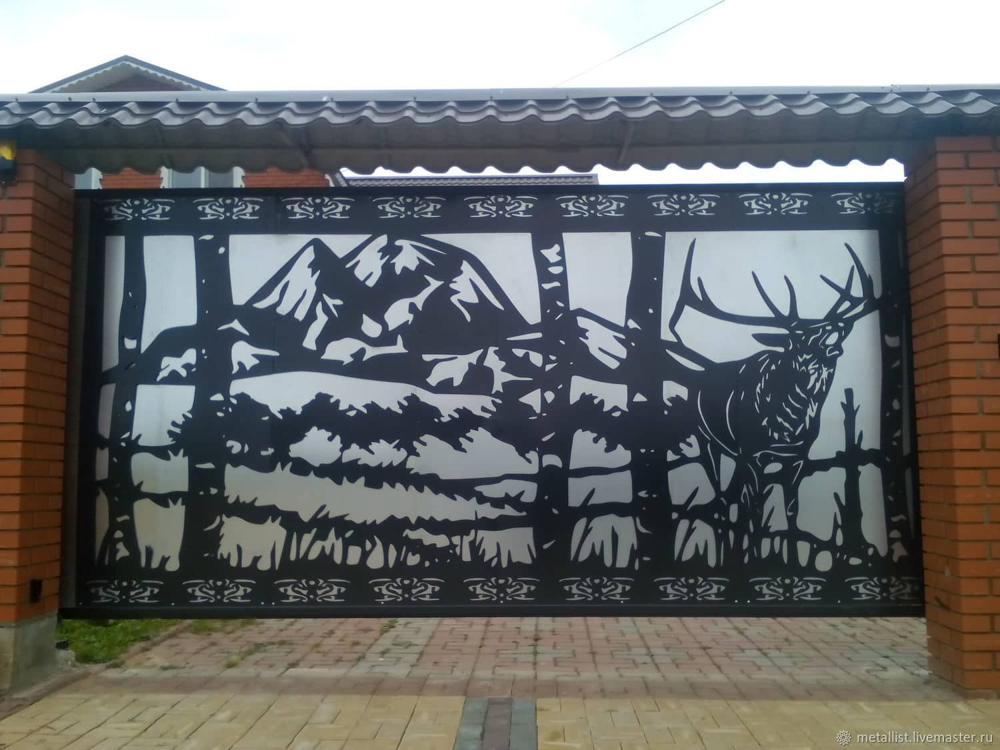

Проект Кустарщина, как и многие стартапы потребует некоего времени на развитие, адаптацию, исправление ошибок и раскрутку в онлайне, а все это время нашей команде нужно кушать, кормить семьи да само производство будет требовать все новых и новых финансовых
вливаний. Поэтому : Если в рамках нашей повседневной интеграторской деятельности нам понадобится поставить в Заказчика электронный киоск(инфомат) или вендинговый аппарат или стойку для коммутационного и серверного оборудования – мы
создадим его сами. Да неизбежно электронная начинка в большей части будет импортная и куплена в дружественном нам Китае, но вот корпус компоновка, настройка – это сделает наше производство именно такое какое хотите вы – настенное,
напольное, угловое и так далее. А может завтра нам поручат организовать доступ в Internet в удаленных фельдшерских и акушерских пунктах, выездных мобильных лабораториях, занимающихся вакцинацией и выполнением тестов на Covid – ну тогда
мы оснастим их автоматическими мобильными комплексами спутниковой связи , созданными на базе стандартного, стационарного комплекта доступа в Интернет от нашего бизнес-партнера ГазПромКосмические системы. Огромное внимание уделяется
в рамках государственных программ экологии и внутреннему туризму – хорошо…. у нас есть готовая задумка по созданию типового лего-конструктура для оснащения туристических троп лестницами и поручнями, универсальными, легкими и износостойкими.
Необходимо отслеживать паводковую и пожароопасную ситуации в трудно доступных местах нашей страны – пожалуйста, наработка по установке скрытых и защищенных камер видеонаблюдения с возможностью анализа температур и фиксации природных
аномалий, используя для питания только энергию солнца и аккумуляторы декоративно размещенные в пластиковые муляжах, повторяющих природный ландшафт… Умные опоры освещения в парках и на набережных, потребляющие энергию солнца и дающие
возможность вам зарядить свои гаджеты или подключиться к бесплатному WiFI для связи с родными и любимыми людьми. Растет цена на металл и кованные ворота и забор возле своего дома Вам не по карману, а унылый дешевый металлический профиль
каждый день портит настроение своим видом – помните?! – а нас есть лазерный резчик с огромной поверхностью, и даже безобразный лист металла после обработки превратится в небольшое произведение искусства, но совершено за другие деньги
и изображено будет именно то, что вы нарисуете нам, а не то что Умеет делать кузнец)  И это лишь малая толика задумок, которые мы готовы запустить в малосерийное производство,
сертифицировать и представить на рынке как Наш отечественный продукт. Многие из вас скажут, ну и чем пытаешься нас удивить? Все это и так можно купить в разборе, а потом как то вместе соединить, присбособить друг к другу, на соплях
приклеить…Так вот именно в этом и вопрос. Кустарщина – это не на соплях приклеить – это сделать необычно, не как у всех, но качественно и красиво. И как Я люблю неоднократно повторять – сделать именно так!!!, как вы хотите!!!!.